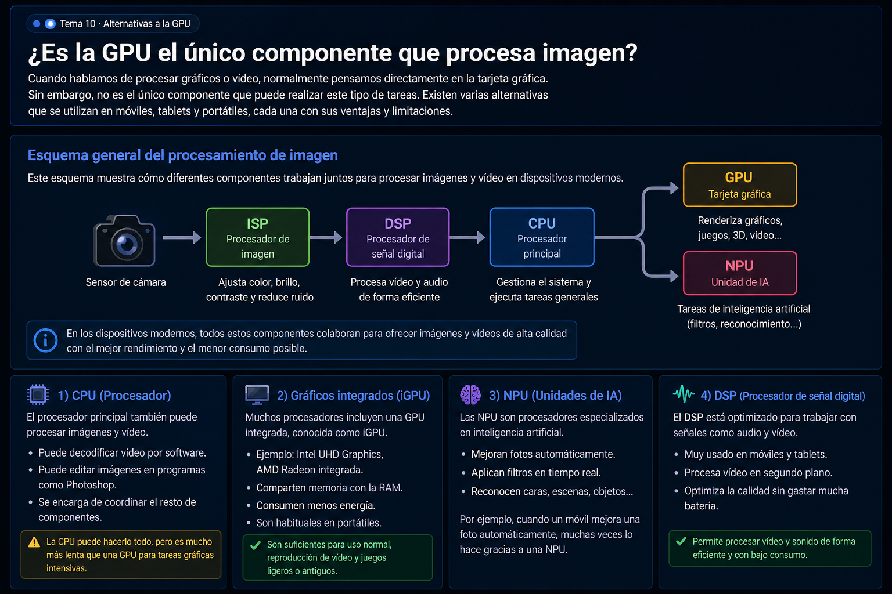

A continuación se muestra un esquema que resume cómo diferentes componentes trabajan juntos para procesar imágenes y vídeo en dispositivos modernos.

Cuando hablamos de procesar gráficos o vídeo, normalmente pensamos directamente en la tarjeta gráfica. Sin embargo, no es el único componente capaz de realizar este tipo de tareas. Existen varias alternativas que se utilizan en móviles, portátiles y otros dispositivos, cada una con sus ventajas y limitaciones.
El procesador principal del equipo también puede procesar imágenes y vídeo. De hecho, antes de que las GPU fueran tan potentes, la CPU hacía prácticamente todo el trabajo gráfico.
Muchos procesadores incluyen una GPU integrada, conocida como iGPU. Este tipo de gráficos no necesita una tarjeta dedicada.
Las NPU son procesadores especializados en inteligencia artificial. Cada vez son más comunes en móviles y portátiles modernos.
Por ejemplo, cuando un móvil mejora una foto automáticamente, muchas veces lo hace gracias a una NPU.
El DSP es un procesador especializado en señales como audio y vídeo. Se usa mucho en móviles.
El ISP es el encargado de procesar las imágenes que vienen directamente del sensor de la cámara.
Es clave en móviles, ya que determina en gran parte la calidad de las fotos.
En dispositivos como móviles o tablets, todos estos componentes suelen estar integrados en un único chip llamado SoC.
La GPU no es el único componente que puede procesar imágenes o vídeo. Existen muchas alternativas, especialmente en dispositivos modernos como móviles o portátiles, donde se combinan diferentes procesadores especializados.
En mi opinión, cada componente tiene su función: la GPU aporta potencia, pero otros como la NPU o el ISP permiten mejorar la eficiencia y añadir funciones inteligentes. Por eso hoy en día los sistemas combinan varios tipos de procesadores en lugar de depender solo de uno.